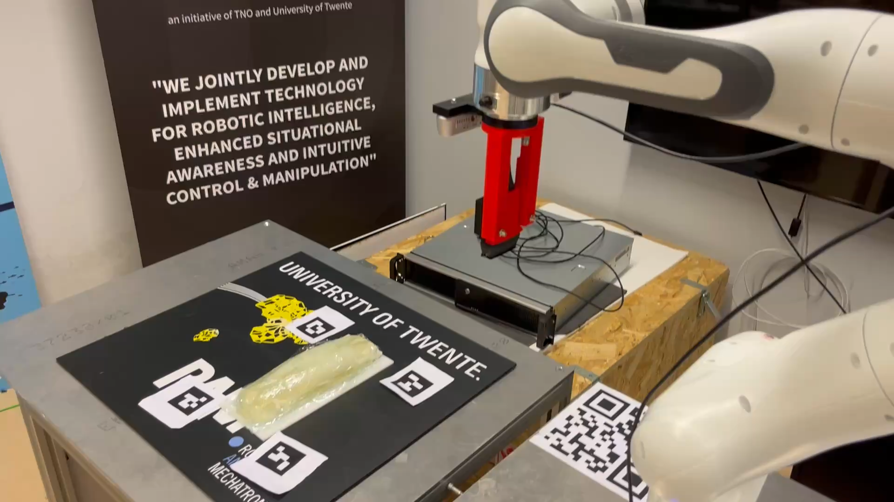
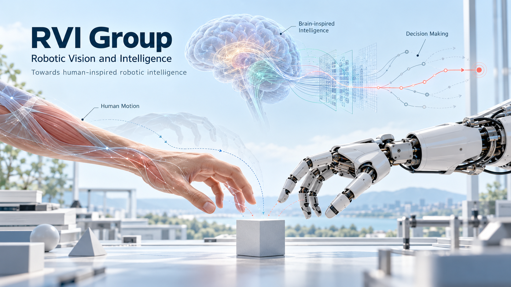
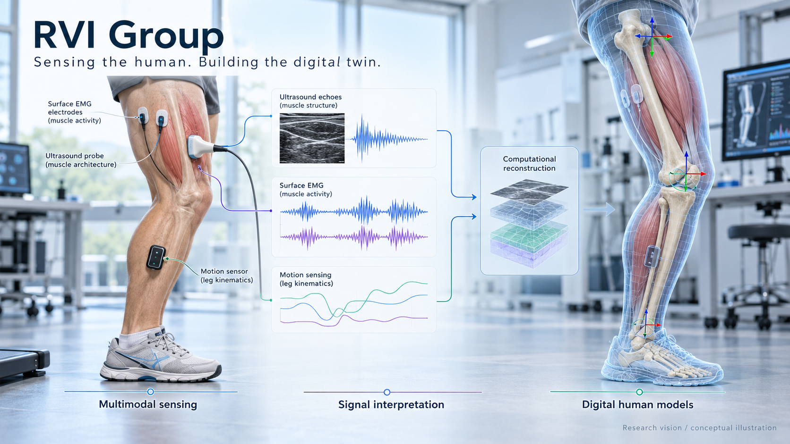

Robotic Vision and Intelligence
RVI Group
Towards human-inspired robotic intelligence.
Connecting perception, movement and decision-making through AI and insights from neuroscience.






Our mission
Bringing human-inspired intelligence to robots.
Our mission is to endow robots with intelligence inspired by how people perceive, move, learn and make decisions. We connect robotics and AI with insights from neuroscience to investigate the principles behind intelligent behaviour.
Our vision
Robots that understand, adapt and act with purpose.
We envision robots that build an understanding of the world, reason about their actions and adapt to unfamiliar situations. Our long-term aim is to develop intelligence that links perception with action, supports causal reasoning and enables meaningful collaboration with people.
Our long-term research agenda
Human motion intelligence
Understanding how people sense and coordinate movement to inform robotic learning and adaptive action.
Decision-making intelligence
Investigating how robots can reason about cause and effect, plan actions and make decisions under uncertainty.
Neuromorphic intelligence
Exploring brain-inspired representations, learning and computation as foundations for robotic intelligence.
Research programme
Five capabilities for grounded robotic intelligence.
Robotic Learning & AI Reasoning
3D Spatial Intelligence
Motion Intelligence
Digital Twins
Research systems
Robotics, imaging and digital models
Work with RVI
Research, education and systems in one group.
Courses and research projects
Teaching across robotics, computer vision, imaging and software systems.
Explore educationStudent research
BSc, MSc, internship and doctoral research in robotic vision, imaging and intelligence.
Research opportunitiesSystems in action
Explore experimental imaging and tracking setups, anatomical models and their related studies.
View projectsCollaborate with RVI
Connect through the University of Twente for research, education and clinical collaboration.
Contact the group